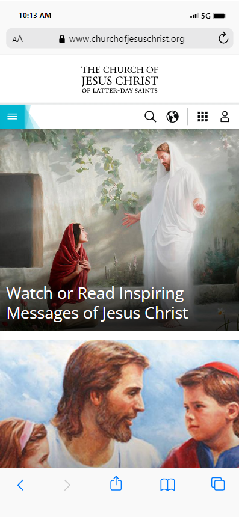
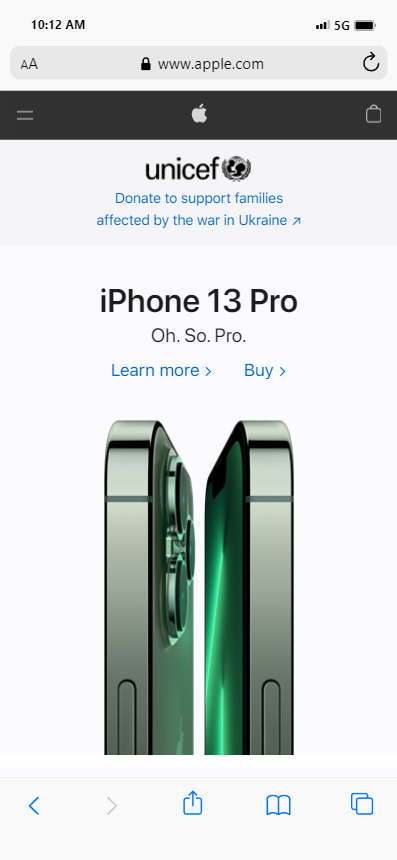

Visual Hierarchy__________..
The Church of Jesus Christ
www.churchofjesuschrist.org The website of the Church of Jesus Christ of Latter-day Saints uses visual hierarchy in how it clusters its buttons on the top menu and in the order of the pictures that appear on the main page. In this screenshot, for example, the first three pictures are of Christ and temples, and you have to scroll down to find news articles, which have titles in dark text, rather than the white text of the initial pictures. When viewed on a larger screen, the site also adjusts the size of the pictures, so that the first one shown is bigger than the other two mains ones, which are longer than the other news articles. In this view the three main pictures sit atop the less important news articles.
White Space & Clear Design
Apple
www.apple.com Apple's website makes a terrific use of white space and clear design, creating emphasis on the center third of the webpage. Since only about a third of the screen is taken up by text and pictures, the other two thirds is left as free space. This approach is clean, easy to digest and to the point. As you scroll down, the space is divided between different banners, all of which keep an emphasis on the central theme, at least in terms the placement of the text in the images. It is not until you reach the bottom of the page that this pattern changes, informing the viewer that it is a different section of the page.
Rule of Thirds_____________
Microsoft
www.microsoft.comThe Microsoft webpage arranges its banner images to follow the rule of thirds, while the smaller advertisements put the product front and center. This effect is most noticeable when the page is viewed on a large monitor. If you click between the images of the banner, you observe how they have put the text in the left third of the space and the picture in the picture in the right third of the space. Even when the view is miniaturized, there is a clear focal point in the right third of the images, as shown in the screenshot by having two floating screen leaving frame in the top right, as opposed to only one in the bottom left.